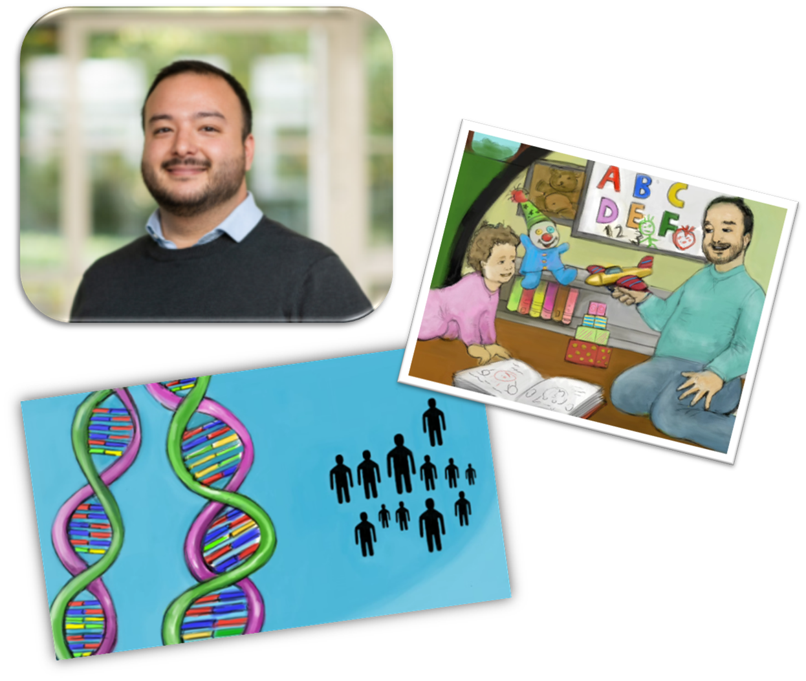

Dr. Selim Sametoğlu
Who am I?

Current work
I currently work as a postdoctoral researcher at the internationally renowned Max Planck Institute for Psycholinguistics in Nijmegen. My current work has two main focuses. First, I study the complex genetic and environmental pathways that contribute to, or hinder, children’s development, with a particular emphasis on language development. Second, I work on developing scalable and cost-effective methods for assessing children’s language development.
For the first research line, I work with large population-based cohort datasets, such as the Netherlands Twin Register, and combine genetically informed approaches, including classical twin designs and polygenic score analyses. For the second research line, I am currently leading the development and formal validation of the NL-CDI: CAT, a cost-effective and scalable computerized adaptive assessment of children’s language development. The NL-CDI: CAT is a Dutch adaptation of the widely used MacArthur-Bates Communicative Development Inventories. The formal validation project is currently ongoing and is expected to be finalized in the near future.
Make sure to check out this page to see an up-to-date list of my relevant work.
Broader expertise
More broadly, my work combines expertise in genetically informed research designs, traditional psychometric assessment, and novel methods for measuring human behavior at scale.
Education and background
I received my Research Master’s degree in Individual Differences and Assessment from Tilburg University in 2020, where I built a strong foundation in the theory, assessment, and modeling of individual differences in human behavior.
I completed my PhD at Vrije Universiteit Amsterdam in 2025. My dissertation investigated shared heritable influences on social media use and wellbeing, with a particular focus on using digital behavior, such as language on social media, to assess wellbeing. This work shows how social media-based assessments can complement traditional survey methods and provide richer insights into wellbeing at both the individual and population levels.
Collaboration and outreach
I am happy to be contacted about potential collaborations on research that combines traditional survey data, digital traces, and large genetically informative datasets or designs. You may also contact me for science communication activities, including blog posts, magazine articles, and other forms of public engagement.
More about me
Outside of my academic work, I enjoy woodcarving, painting, cycling from one city to another, and drawing figures for teaching materials/courses/and presentations. I hope to share more of these creative projects more systematically on this personal website very soon!